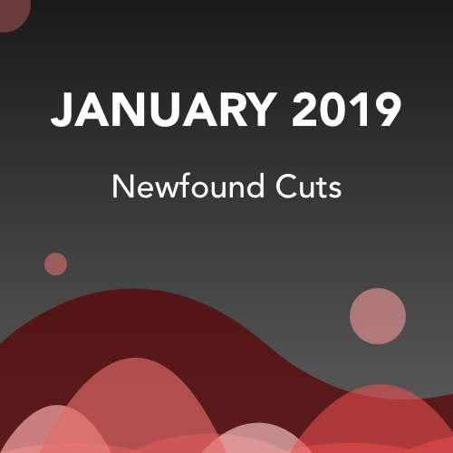
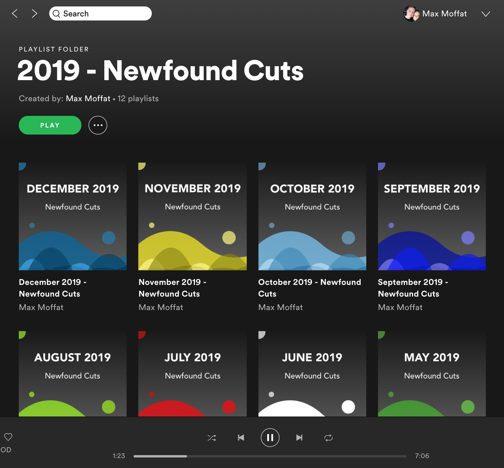

A really nice feature of Spotify is the ability to upload your own playlist art, rather than using the default compilation cover art it creates for you.
Each month, I create a playlist of new music I find with the same naming structure [Month Year] - Newfound Cuts. I use this as a catalogue to come back to everything I enjoyed that month. Because I use the same name and structure for each playlist, I figured it would be fun to create a template of sorts and make them uniform. It would bring them all together as a collection and also present nicely on my Spotify Profile page.
The image above is the template style I came up with. I wanted to bring elements from Spotify's current design style and merge it with my own style and influence.
Spotify is known for their bold, standout text and dark UI. So, I incorporated that into the tile with the name of the playlist and background gradient. Now, to add my own design elements I wanted to incorporate the following things:
And then the fun part was seeing them all together within my Spotify Profile!
